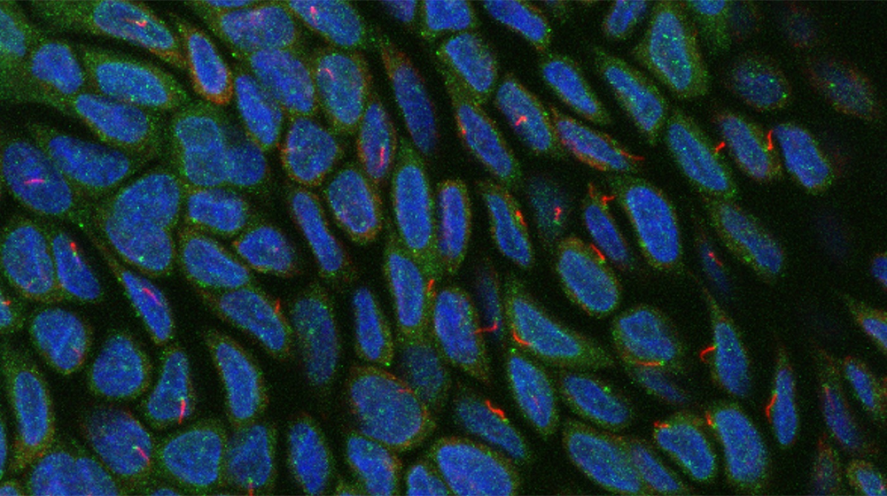

Primary Cilia: Signaling Human Health
The primary cilium is a critical extracellular-facing signaling hub found in practically every quiescent cell in the body. Housing a number of tissue-specific GPCRs, these small (1/10,000th the total cell volume) but powerful signaling hubs sense a wide variety of cues ranging from metabolites, neurotransmitters, morphogens, odorants, and light. When disrupted, severe pathologies arise, ranging from developmental disorders to diseases that arise later in life (e.g., Alzheimer’s disease, diabetes, cancer). Our lab’s focus is on what are the molecular cues (on the order of protein complexes, dynamic protein-protein interactions, and post-translational modifications) that regulate primary cilia formation and function in time and space and how these transient cues can be the source of pathology when disrupted.